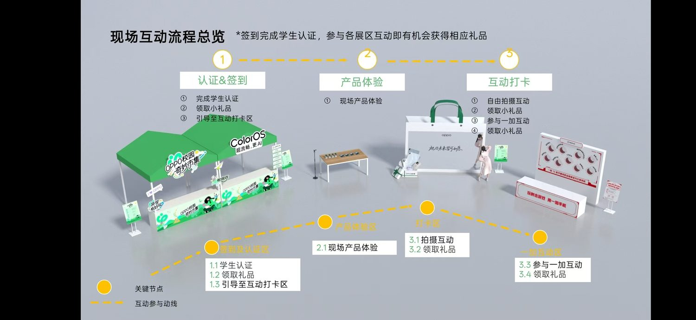
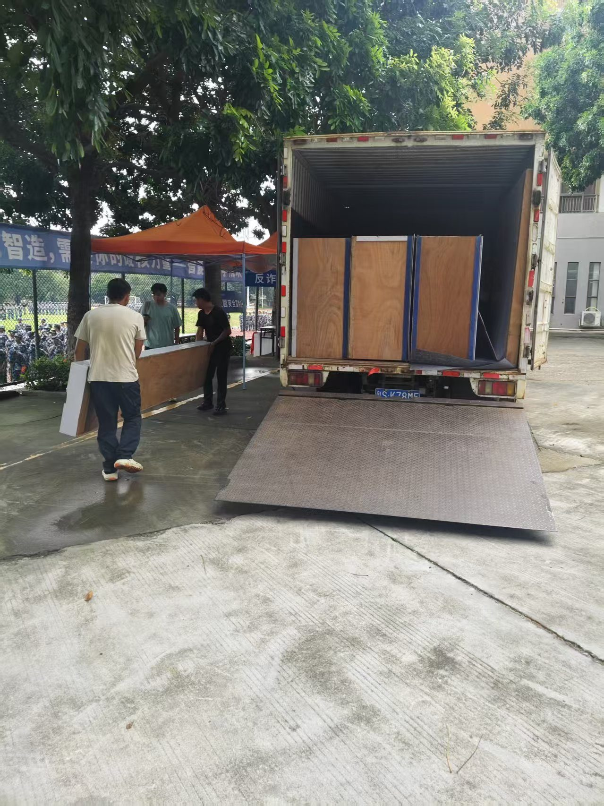
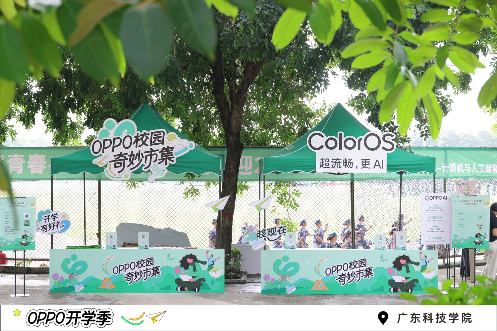
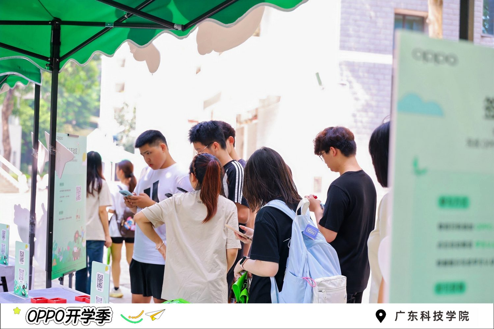
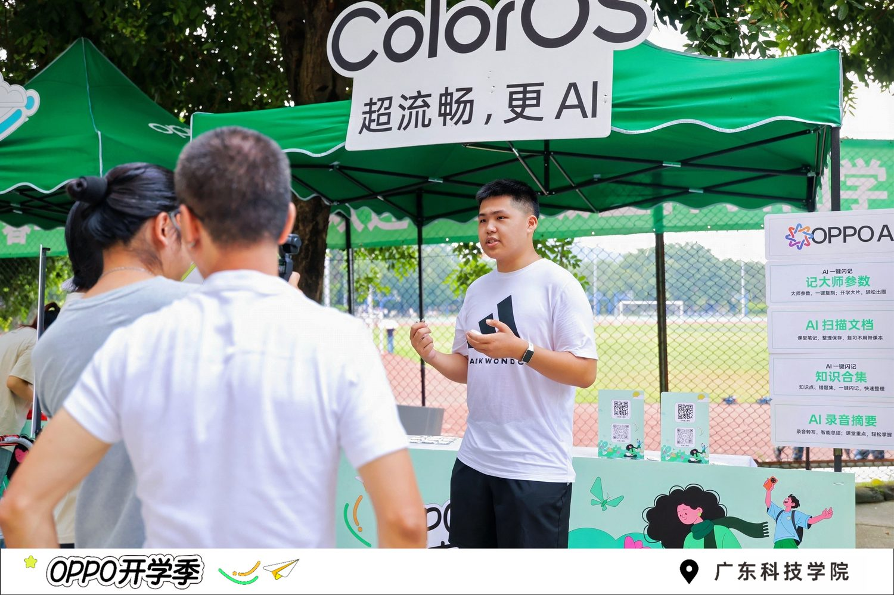
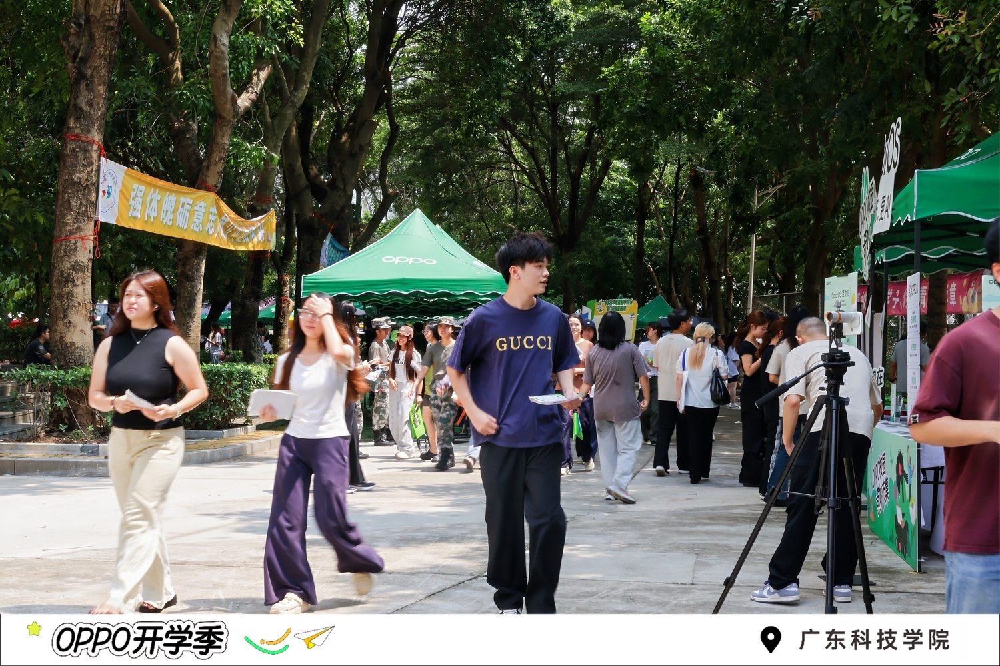
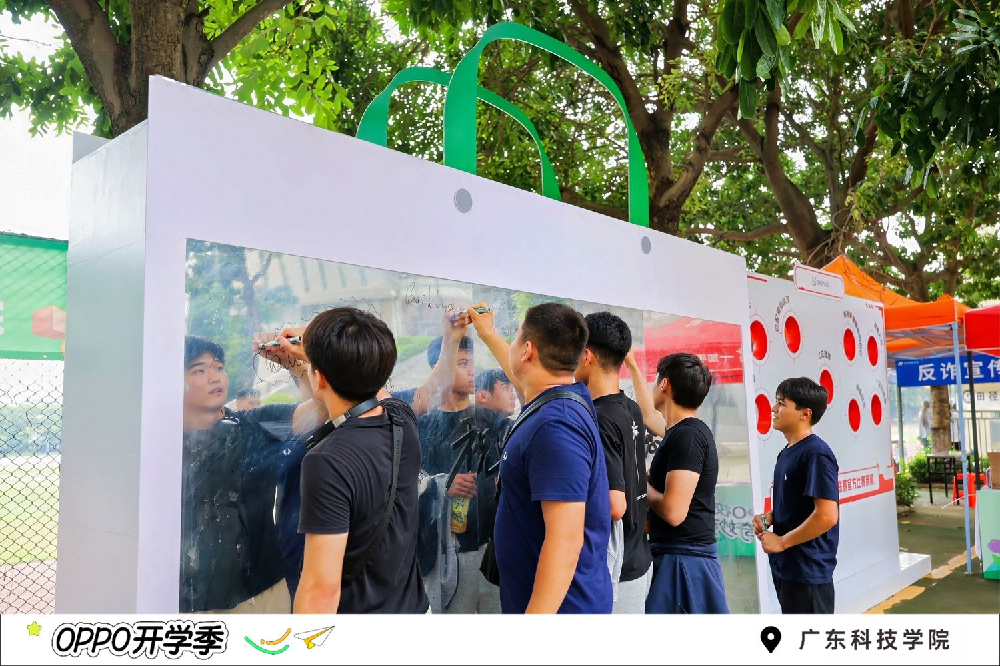
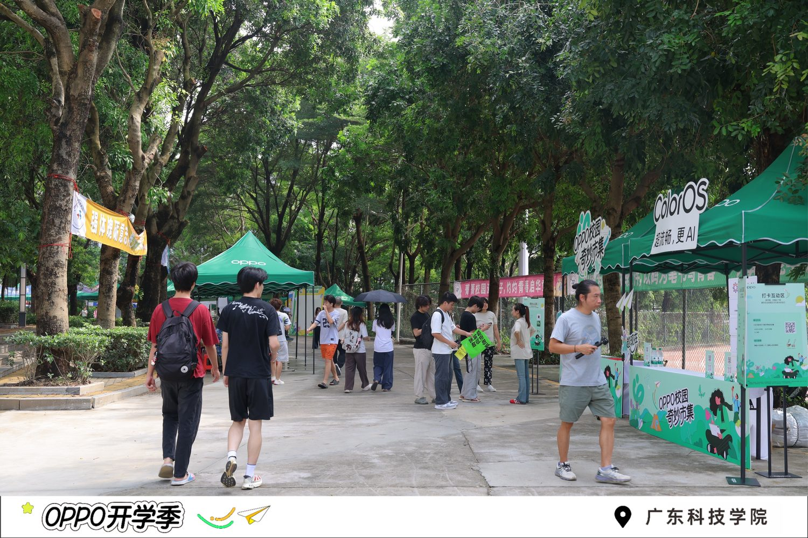
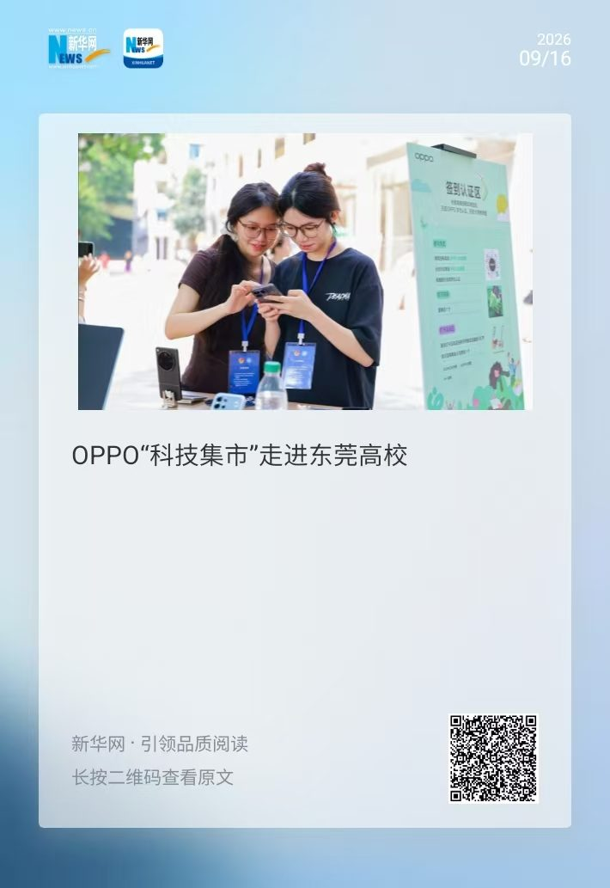

OPPO「校园奇妙市集」复盘：30 顶帐篷撬动的品牌活动落地
一、起点：招新物料缺口 30 顶帐篷
这个项目的起点是一项不起眼的统筹活：开学季，我负责对接全部校级部门的招新物料。盘点下来，大本营帐篷缺口 30 顶。
我的第一反应不是去采购，而是翻自己手上的品牌联系人库——此前做赞助合作沉淀下来的资源。一通电话打给 OPPO 莞惠区域营销负责人，对方直接答应：帐篷没问题，我们提供。
联系人库的价值不在于存了多少名片，而在于你需要的时候，对方愿意接你电话、并且愿意为你调动资源。
更有意思的是需求的「双向奔赴」：OPPO 正好在推开学季校园活动，学校有真实的场地与人流。于是从补 30 顶帐篷这个物料缺口开始，需求一路对齐、加码，最终落地成了完整的「OPPO 校园奇妙市集」——由我负责学校侧的全流程对接。
二、对接：把「想法」翻译成「执行表」
品牌方的创意要落到校园里，中间隔着一张必须逐项确认的执行表。这一步我做了三件事：
1. 定互动动线
和品牌方一起把市集玩法定成三段式动线，让学生「有得玩、有得拿、愿意停留」：

2. 清物料与分工
物料数量逐项核对；四个展区（签到认证区 / 产品体验区 / 打卡区 / 一加互动区）每区的人员配置、岗位职责、排班逐一敲定，形成分工表——活动现场不靠临场发挥。
3. 走合规流程
校园活动最容易卡住的不是创意，是合规：车辆进校报备、工作人员信息登记，全部提前一天办完，搭建当天零阻力。
三、搭建：提前一天进场

提前一天搭建是活动执行里性价比最高的一条纪律：所有不可控因素（天气、物料缺损、场地冲突）都在活动前一天暴露、前一天解决。
四、活动现场：市集跑起来了

活动现场分两条线：OPPO 主展区负责认证签到与产品体验，一加互动区（一加是 OPPO 旗下品牌）负责游戏打卡与趣味互动，两条动线互相导流。





五、传播：让活动走出校园
活动落地只是半场，传播才是品牌方真正买单的东西。这次在传播层做成了两件事：
- 主流媒体报道：广州日报记者到现场采访，活动于 2026.09.16 登上新华网——《OPPO"科技集市"走进东莞高校》。
- 校园官方传播：对接学校蓝标视频号发布 OPPO 活动现场视频，视频号链接。

这场三方协作里每个人拿到的都是自己想要的：品牌方要曝光和到店转化，学校要优质活动内容与学生福利，媒体要「科技进校园」的好故事。对接人的价值，就是把三方需求拼成一个都能赢的结构。
六、复盘：可复用的三点
这场活动也是我「地推方法论」系列的第一篇：校园地推的上半场是资源与执行，下半场是数据与传播。下一篇聊聊另一场开学季地推里，怎么把执行层的话术和节奏打磨出来。
下一篇复盘 校园活动赞助复盘：品牌方到底愿意为「校园流量」付多少钱